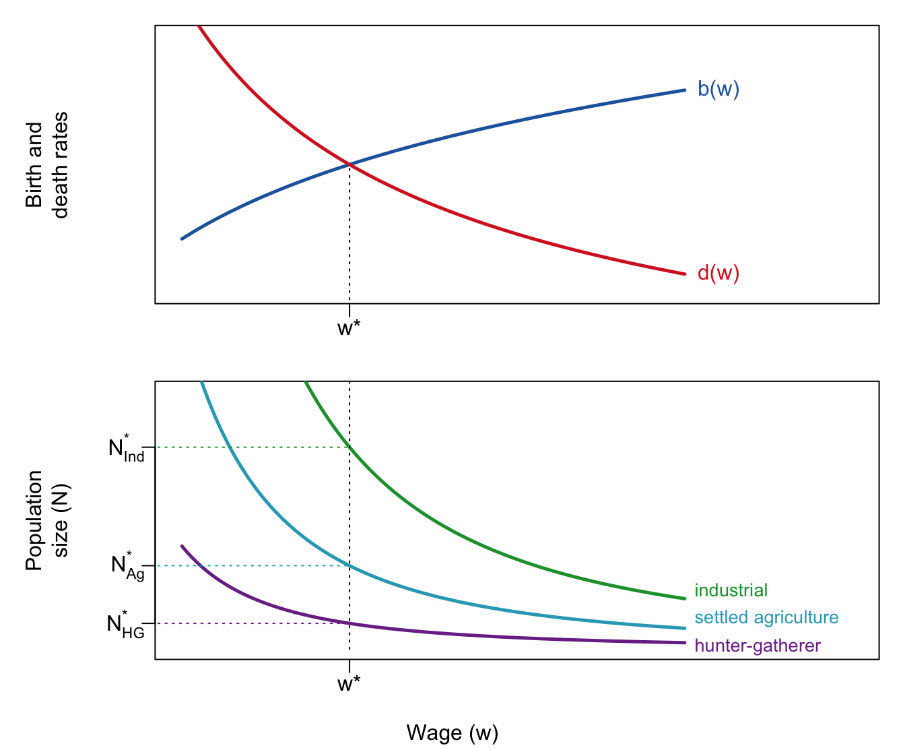
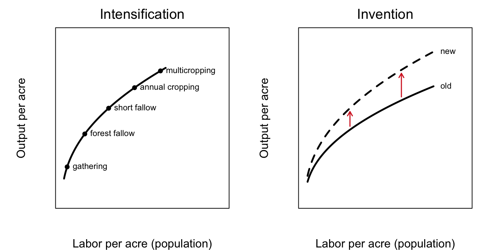
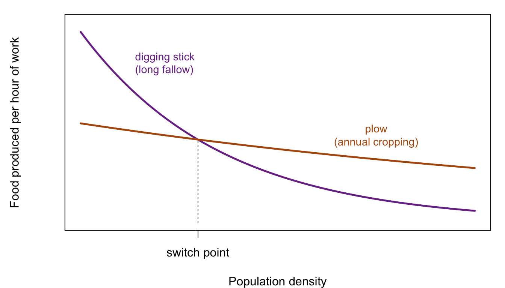
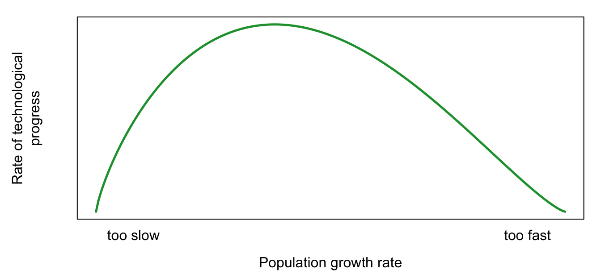

5 Boserup: Population Pushes Technology
Draft: provenance notes (for review)
Margin tags mark material that is not in the course slides or lab. Added · from readings comes from the assigned readings (Boserup, Malakoff). Added · new is from outside the course materials (my framing, general knowledge, or my own analysis) and needs the closest check. Untagged material follows the 2025 slides (09 Boserup).
Added · new Bridge text written for the chapter split.
Malthus (Chapter 3) and Solow (Chapter 4) both treat technology as coming from outside the model. This chapter looks at the opposite view, in which a growing population creates the pressure, and the density, that lead to new ways of producing food. The next chapter, Chapter 6, carries the question into the present: with the fastest population growth in history behind us, are we running out of resources?
5.1 When is a digging stick better than a plow?
Start with a question from lecture. As a pre-industrial human, which would you rather have: a plow, a digging stick, or a bow and arrow?
The plow seems like the obvious answer. It is the more “advanced” technology. But the best answer is: it depends on how many people live around you. By the end of this chapter you should be able to explain why. The answer says something important about how population and technology are related.
5.2 Technology pull and population push
5.2.1 Malthus: technology pulls population along
In the Malthusian model of Chapter 3, technology is exogenous. It changes for reasons outside the model, and population follows. A new technology shifts the wage curve outward, wages rise for a while, and then population grows until the wage is back at its old equilibrium level. Population ends up larger, but no richer. Call this the technology-pull theory of population history.
Figure 5.1 shows what this means over the long sweep of history. Each great technological regime (hunting and gathering, settled agriculture, industry) supports a larger equilibrium population at the same equilibrium wage.
Plotted against time, this gives the staircase you met in Chapter 1 (Livi-Bacci’s version of Deevey’s diagram): long plateaus of near-zero growth, broken by bursts of growth after each technological revolution, with perhaps another revolution to come.
5.2.2 Boserup: population pushes technology
The Danish economist Ester Boserup (1910–1999) proposed the reverse. Not technological change → population growth, but population growth → technological change. In her view, population grows for its own reasons. It is a kind of natural tendency. Growing numbers then force people to change how they produce food, and much else. This is the population-push theory.
Added · from readings The quotations in this subsection are from Boserup (1976), pp. 21–23 (original Population and Development Review pagination): carrying capacity and the “two main weaknesses,” p. 21; transport and administrative technology, p. 22; zero growth, p. 23.
Boserup began her 1976 article by describing the classical theory she was attacking. It treats population as passive: it “assumes that a given environment has a certain carrying capacity for human populations, defined as the number of persons who can be accommodated in that region under the prevailing system of subsistence.” Population stays at that limit until better food technology raises it. Boserup’s objection:
In her own words
“This reasoning suffers from two main weaknesses: first, the theory focuses exclusively on the technology of food production, ignoring the effects of technological changes in other areas and the effects of the environment; secondly, the theory ignores the effects of demographic change on both environment and technology.” (Boserup 1976, p. 21)
Her first point is that many technologies besides food affect population. Better transport can raise mortality by spreading epidemics, or by making it easier for “a conqueror or an indigenous ruling class to move food away from the region where it is produced.” Better military technology usually raises mortality. Walled towns reduced deaths in war but probably raised deaths from epidemics. And what she calls “administrative technology,” the organization of society, can turn a local war or harvest failure into a demographic catastrophe if it breaks down.
So Boserup doubted that pre-industrial populations sat at a food-determined ceiling. Hardship in history came from war, plague, and natural disaster, not mainly from overpopulation. In her words: “There seems to be little reason to assume that zero rates of population growth occurred more frequently in past history than other rates of growth, positive or negative.” Some unlucky peoples shrank and disappeared, while luckier ones grew slowly for long periods.
5.2.3 A typology
Table 5.1 places the models of this course in a simple grid, according to whether population and technology are explained inside the model (endogenous) or taken as given (exogenous).
| Technology exogenous | Technology endogenous | |
|---|---|---|
| Population exogenous | Solow | Boserup |
| Population endogenous | Malthus | Endogenous growth (e.g., Kremer 1993; Galor and Weil 2000; Romer) |
5.3 Two kinds of technological change
How does a larger population change technology? Boserup’s answer has two parts, and the distinction matters.
- Intensification: “no new ideas, just new applications.” Methods that were already known, but not worth using at low density, become worth using as density rises. Productivity per hour of work falls, so people must work harder to get the same calories. Is a plow better than a digging stick? It depends on density. In this sense intensification is dismal, and Malthusian.
- Invention: “some sticks better than others, some plows better than others.” Deeper technological change creates genuinely better tools and cumulative infrastructure, such as roads and metal industries. This can set up a virtuous circle: increasing density → better technology → bigger surplus → increasing density → …
Figure 5.2 shows the difference. Intensification is a movement along a production function. Invention shifts the production function up.

The curve in the left panel is smooth because farmers can combine systems, and because returns decline within each system.
5.4 Agricultural intensification
5.4.1 The fallow sequence
The key to Boserup’s theory is fallow: leaving land uncultivated so it can recover. Table 5.2 lists the main systems of food production, from the most land-using to the most land-saving.
| System | Cultivation and fallow | Typical tools |
|---|---|---|
| Gathering | Wild plants, roots, fruits, nuts; no cultivation | Digging sticks, fire |
| Forest fallow | 1–2 crops, then 15–25 years of fallow | Digging sticks, fire |
| Bush fallow | 2 or more crops, then 8–10 years of fallow | Hoes, machetes |
| Short fallow | 1–2 crops, then 1–2 years of fallow | Plow and draft animals |
| Annual cropping | 1 crop a year, a few months of fallow | Plow, draft animals; often irrigation |
| Multicropping | 2–3 crops a year, little or no fallow | Plow, draft animals, irrigation |
Why fallow at all? Fallow regenerates soil nutrients. It lets farmers avoid weeding, since they simply let weeds and bushes grow and then move on. And burning the regrowth puts nutrients back into the soil. In lecture, photographs show the range: extensive gardening in the Brazilian forest, with easy access to hunting and gathering; slash-and-burn plots where a farmer plants tubers among felled logs he has not bothered to clear; experimental multicropping in Brazil; and the huge labor investment of terraced rice fields in the Philippines.
Added · from readings The history in this subsection is from Boserup (1976), pp. 24–26 and 29.
Boserup used this sequence to reinterpret European history. The classical view held that primitive equipment kept most land uncultivated until better tools came along. Boserup pointed out that much of the “uncultivated” land was in fact being used, but lay fallow in most years under long-fallow systems. As early as 4500 BCE, some populations in temperate Europe seem to have practiced forest fallow. Over many centuries, fallow periods grew shorter “in step with the gradual increase of the European population,” until annual cropping spread in the eighteenth and nineteenth centuries. Regions that stayed sparsely populated kept long fallow for centuries longer.
The environment and the tools changed along with the system. Forests thinned and disappeared, replaced by pastures and fields, and “the primitive digging sticks and stone axes used in the food-gathering and forest-fallow stages had to be replaced by other hand tools and later by ploughs.” The same gradual path appears in ancient Mesopotamia, from food gathering on mountain slopes before 8000 BCE to irrigated plow agriculture in the southern plains four to five thousand years later. “The neolithic revolution,” Boserup wrote, “is not a sweeping revolutionary change but a process of gradual evolution.”
5.4.2 Diffusion, not invention
Here is the heart of the digging-stick puzzle. Boserup argued that new systems rarely required anyone to invent anything. Tools and methods spread from denser populations to sparser ones when the sparser ones needed them.
“When we observe that even today some peoples use primitive land-using subsistence systems … we should not ask why these peoples never invented the plough and the wheel, but why the diffusion of these technologies seems to have happened fairly rapidly in some cases and not at all in other cases.” (Boserup 1976, p. 27)
5.4.3 Why stick with the digging stick?
Added · from readings Boserup (1976), pp. 27–30 (output per unit of labor, p. 27; the Kalahari studies, p. 28; labor investments, p. 30). The figure is my illustration of her argument.
Her answer is labor productivity. Land-using systems “have a higher output per unit of labor input than usually assumed.” Studies of the Kalahari Bushmen found that the women who did the food gathering needed only two to three days a week to provide the necessary food. Land-saving systems produce much more food per acre, but they demand far more work: plowing, weeding, manuring, irrigating. They also require big up-front labor investments: clearing roots and stones, building wells, dams, terraces, and irrigation channels. For a growing group that can still move, splitting up and starting long-fallow farming somewhere new is the labor-saving choice. “The yields of the labor investments — if properly maintained — may last forever, but the planning horizon of peoples who subsist by food gathering or long-fallow agriculture is a few years at most.”
Figure 5.3 puts the argument in a picture. At low density, the land-using system gives more food per hour of work. As density rises, it runs into trouble: walks get longer, fallow gets shorter, and soils give out. Past some density, the labor-intensive system becomes the better choice, even though people work harder than their ancestors did.

5.4.4 Does intensification mean more misery?
Not in the Malthusian sense of higher mortality. But yes, in the sense of lower utility: people must work more hours to survive. Malthus himself described this response. In the oscillation passage of Chapter 2, he wrote that “the plenty of labourers, and the necessity of an increased industry amongst them, encourage cultivators to employ more labour upon their land; to turn up fresh soil, and to manure and improve more completely what is already in tillage.”
5.4.5 A modern test: Machakos, Kenya
Added · from readings This subsection summarizes Malakoff (2011), pp. 544–546: the 1937 memo, Mortimore’s “garden,” and Siedenberg’s warning, p. 544; More People, Less Erosion and Boserup’s ideas, p. 545; the critics, the Malawi title, and Ellis, p. 546.
Is Boserup’s logic still relevant? David Malakoff’s article in Science tells the story of Machakos, a hilly, drought-prone farming district 50 kilometers south of Nairobi. In 1937, a British colonial official warned that its inhabitants were “rapidly drifting to a state of hopeless and miserable poverty and their land to a parching desert of rocks, stones and sand.” The population was then approaching 250,000. By 2011 more than 1.5 million people lived there, and Machakos had become a symbol of something else: “A landscape that was once declared good for nothing is now like a garden when the rain falls,” in the words of the geographer Michael Mortimore.
Mortimore, Mary Tiffen, and Francis Gichuki documented what happened between 1930 and 1990, as the population roughly quadrupled, in a 1994 book with a deliberately provocative title: More People, Less Erosion. Farmers built terraces to control erosion, used more animal manure, and sold food in the growing Nairobi market. Nairobi also offered seasonal jobs, which brought income for further improvements. Families had fewer children and invested more in schooling. The study, Malakoff writes, “‘controverted’ Malthus and backed Boserup.” Mortimore summarized the Boserupian idea simply: people “weren’t just mouths to feed but also brains that could think and hands and legs that could work very hard.” A farmer who could once justify weeding a field only once a season could, with more labor available, weed it three times.
The critics are worth hearing too. A coffee boom in the 1970s may have given a one-time boost. Machakos still does not grow enough food to feed its own population. The poorest families may not have shared in the “miracle.” And other studies found the opposite pattern elsewhere, with titles like “More people, more soil degradation: The Malawi experience.” “Although local successes offer hope, it is dangerous to generalize,” warns one critic, Jules Siedenberg. Boserupian responses are not “an automatic result” of population growth: farmers need markets, capital, and information. The geographer Erle Ellis, who studied land use in China, concludes that “Boserup was right,” but adds that “people are working harder than ever,” just as Boserup predicted.
5.5 Population and invention
So far, intensification only explains how people cope. It doesn’t explain progress. How might population drive genuine invention? Lecture offers three ideas.
- Necessity is the mother of invention. More misery could inspire people to invent. With higher population, perhaps we move not just along the curve but upward as well. But this still doesn’t explain why.
- More geniuses. More people means more inventions. This assumes that an additional person creates more solutions than problems.
- Density. This is Boserup’s own emphasis.
5.5.1 Boserup on density
Higher density creates economies of scale. One kind is in human capital: an itinerant craftsman becomes a local specialist, and eventually universities become possible. Another is in physical capital: water or animal mills replace everyone grinding grain by hand at home. A third is infrastructure such as roads and canals.
Added · from readings Boserup (1976), pp. 30–32 (Adam Smith, p. 30; the trap, footpaths, and towns, p. 31; the food surplus, p. 32).
Boserup’s examples are vivid. “It is well known, since Adam Smith’s famous dictum, that the division of labor is limited by the extent of the market.” Full-time craftsmen could not exist in Amazonian villages of 50 to 150 long-fallow farmers. Such villagers must stay jacks-of-all-trades, so their high productivity in food is offset by low productivity in everything else. They are, she says, caught in a trap:
In her own words
“Such communities are caught in a trap because the maximum density consistent with their subsistence system is below the minimum density needed for development in fields other than food supply. They are not likely to escape from the trap until population density in the region becomes so high (by natural growth or by immigration) that they are forced to adopt a land-saving system of subsistence.” (Boserup 1976, p. 31)
Transport works the same way. “Even a footpath through tropical forest can exist only if used regularly by a certain number of people (or animals).” Roads and canals need a large population to build and maintain. Before that, even rulers had to keep moving:
“When population density increases, and the land-using subsistence systems are replaced by land-saving systems, both rulers and craftsmen can settle permanently in towns with the additional advantages of still more specialization, better organization, and more specialized equipment.” (Boserup 1976, p. 31)
Boserup also made a subtle point about cities. A town needs a large food surplus “in an absolute sense but not necessarily a large food surplus per agricultural producer.” Many dense, hard-working farm families each selling a little can feed a city, provided the food can be transported to it.
5.5.2 Town and country
Putting these together gives Boserup’s picture of town and country. Population growth in rural areas drives migration to cities. Cities generate economies of scale and invention, and a demand for food. That demand, and the markets and technology that come with it, raise the returns to capital investment in agriculture, driving rural intensification and invention. It is a precarious system: in bad times, food prices are high and the countryside is short of labor. The Machakos story, with Nairobi as the city, follows exactly this pattern.
5.6 The big picture
Intensification is not necessarily “progress.” Hunter-gatherers work less and eat more meat, so the “invention of agriculture” around 8000 BCE may have been more a matter of necessity. Capital investments such as draft animals, plows, and harnesses only make sense if cropping is frequent. And there is no ratchet on intensive technology: Europeans used slash-and-burn agriculture in the New World, where land was abundant.
Invention does lead to progress: better tools, more infrastructure (saved surpluses), rising standards of living, and know-how that is cumulative and not forgotten.
Is there an optimal rate of population growth? If deeper technological progress depends on density, a population that grows too slowly may never reach the densities needed. One that grows too quickly may be under constant Malthusian pressure, with small surpluses and little capital (Figure 5.4). Lecture asks whether Africa might be an example of the first, China of the second, and whether Europe simply happened to be in the sweet spot.

What determines density and growth? Lecture lists three kinds of factors:
- Environment. Climate and disease set the positive check.
- Culture. Marriage patterns set the preventive check, as with the European marriage pattern, but not in China.
- History. War and slavery matter too.
Added · from readings The climate and disease argument is from Boserup (1976), p. 34.
Boserup herself stressed disease. Most remaining “primitive” peoples live in the wet tropics, where abundant plant growth goes together with ideal conditions for the bacteria and parasites that decimate populations. Lower disease mortality in dry and temperate climates, she suggested, “may help to explain why it was the dry and temperate climates that gave rise to most of the early civilizations.” On history, she argued that early urban civilizations captured labor from the surrounding peoples, keeping those peoples below the density needed for development:
“But if the urban civilizations skimmed off the population increase of the surrounding barbarian peoples or even decimated their numbers, the remaining barbarian population was prevented from reaching the minimum density for urbanization. The barbarians continued their land-using subsistence systems, caught in the trap of low population density described above. More recently, the American slave raids in Africa seem to have had similar effects.” (Boserup 1976, p. 34)
Boserup’s argument uses history and anthropology, not formal models. For an informal introduction to modern endogenous growth theory, which emphasizes the economics of “ideas,” lecture recommends Paul Romer’s 2018 Nobel lecture (about 30 minutes), which is structured as a rebuttal to Malthus.
5.7 Key ideas
- In the technology-pull (Malthusian) view, technology changes on its own and population follows. In Boserup’s population-push view, population growth drives technological change.
- Intensification (shorter fallow, more labor per acre) uses known methods, raises output per acre, but usually lowers output per hour of work. A digging stick is better than a plow at low density.
- New farming systems mostly spread by diffusion, not invention, when growing density makes them worthwhile.
- Density enables specialization, infrastructure, and towns. Very sparse populations can be caught in a low-density trap.
5.8 Check your understanding
Added · new These questions are new.
Digging stick or plow? Explain, in terms of output per hour and output per acre, why a sparsely settled group might reject the plow even if it knew about it. What would have to change for the group to adopt it?
Transport and mortality. Boserup argues that better transport could raise mortality. Give her two reasons.
Machakos and Boserup. Use Boserup’s town-and-country picture to explain the role Nairobi played in the Machakos story. Why might a similarly crowded district with no nearby city have fared worse?
Which kind of change? Was the Green Revolution an example of intensification or of invention, in Boserup’s sense? Use Figure 5.2 to explain.
Too slow or too fast? Explain why, in Boserup’s framework, a population could grow too slowly for its own good.
5.9 Further reading
- Boserup, Ester. 1976. “Environment, Population, and Technology in Primitive Societies.” Population and Development Review 2(1): 21–36. (Reprinted in D. Worster, ed., The Ends of the Earth, Cambridge University Press, 1988.) As you read: Note how agricultural technology responds to population, and the effect of population density on nonagricultural technology.
- Malakoff, David. 2011. “Are More People Necessarily a Problem?” Science 333: 544–546. Applying Boserup’s logic to the contemporary world. As you read: What did Machakos have that other crowded regions might lack?